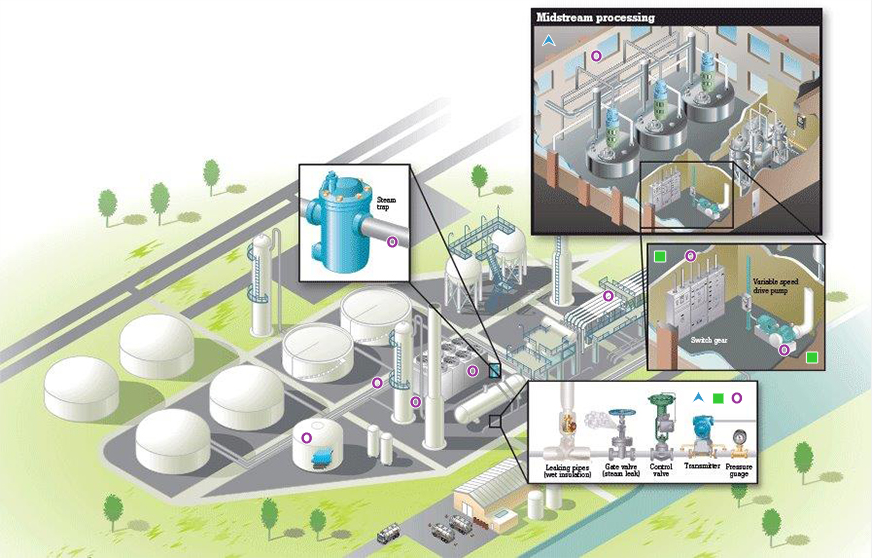

Improve every stage of your chemical processing
Metrology is central to improving chemical processes and understanding how they are performing. From pre-treating raw materials, converting them with a reactor, cracker or kiln, to mixing and purification, you need accurate and consistent measurement tools. And they must be rugged enough to withstand the rigors of demanding chemical processing environments.
Whatever your role onsite, Fluke has the handheld tools you need, backed by experienced specialists online who are ready to advise you about best practices.
If you’re keen to boost your knowledge on chemical processing metrology, download the guide most relevant to you or let us know you’d like to talk to a Fluke specialist. We will contact you.
- Ensuring uptime is continuous and predictable
- Safety of personnel and the environment
- Maintaining high product quality
- Staying within budget
- Preventive maintenance and asset uptime
- Root cause analysis to prevent future failures
- Troubleshooting emergent issues
- Preventing downtime
- Safety systems testing
- Calibration of flow instruments
- Providing immediate response and repair during process interruptions
- Delivering efficient, consistent and quality power from utility or generation to process systems
- Maintaining safety and high energy systems
- Controlling efficient breakers and motors
- Meeting equipment standards and specifications
- Preventive maintenance
- Effectiveness of repairs (valve repacking)
- Assembling machinery
- Determining optimal machinery placements

Areas where tools can be used to prevent issues: Infrared and vibration tools Process Calibration tools Electrical test tools